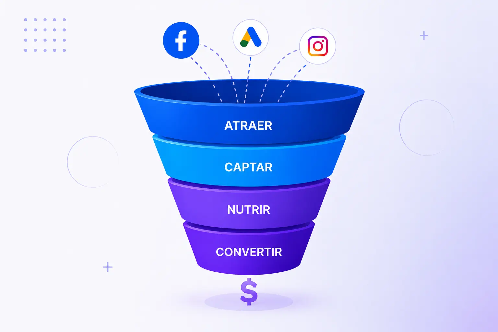

Funnels de venta
Diseño de embudos personalizados para captar prospectos y guiarlos hasta la conversión.
Marketing digital + automatización
En Autoflow diseño landing pages, funnels de venta y sistemas de automatización comercial para convertir tráfico en prospectos, clientes y ventas reales.

Sistemas diseñados para captar leads, automatizar seguimientos y mejorar resultados comerciales.
Soluciones principales
Diseño de embudos personalizados para captar prospectos y guiarlos hasta la conversión.
Páginas optimizadas con estructura clara, llamadas a la acción y enfoque en conversión.
Integración de herramientas digitales para automatizar seguimiento, formularios y procesos.
Autoflow combina experiencia en Project Management, Facebook Ads, desarrollo frontend y automatización de marketing para crear sistemas digitales flexibles, medibles y orientados a resultados.
Conocer metodologíaConstruyamos un sistema que convierta tus campañas, landing pages y seguimientos en una máquina de generación de clientes.
Empezar ahora